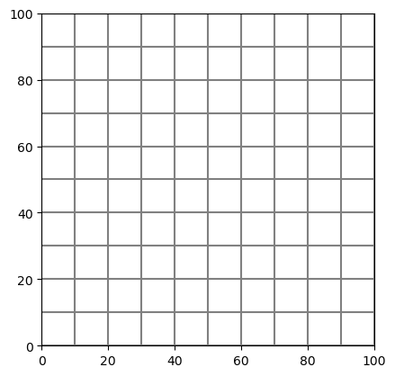
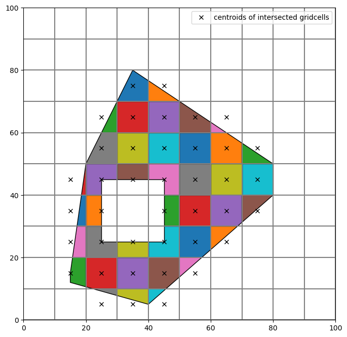
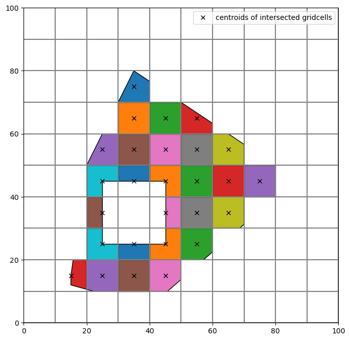
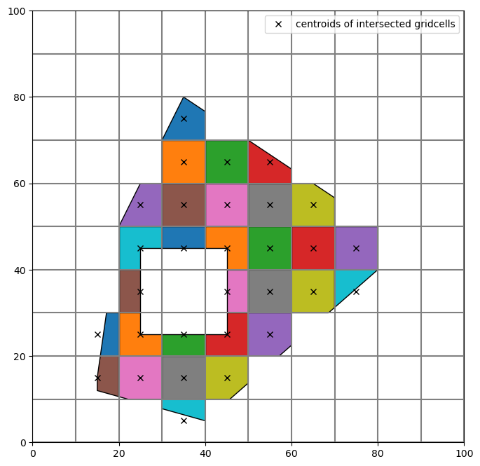
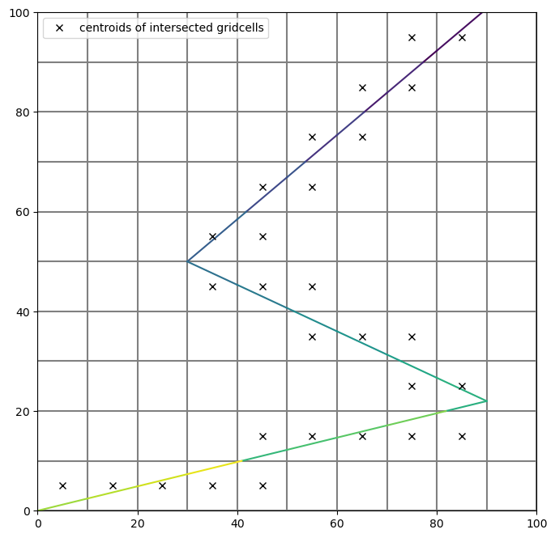
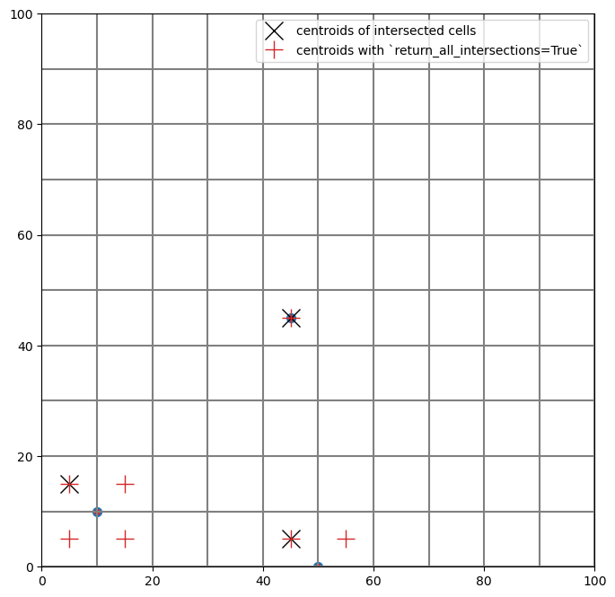
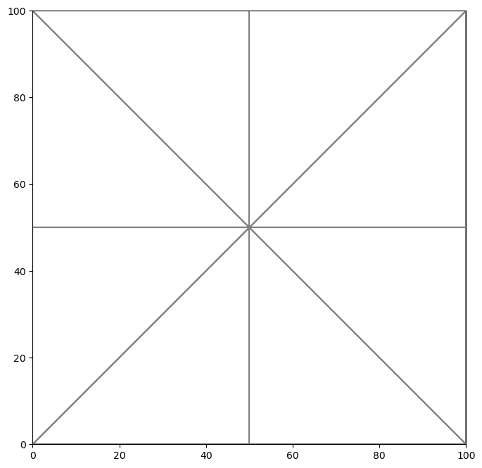
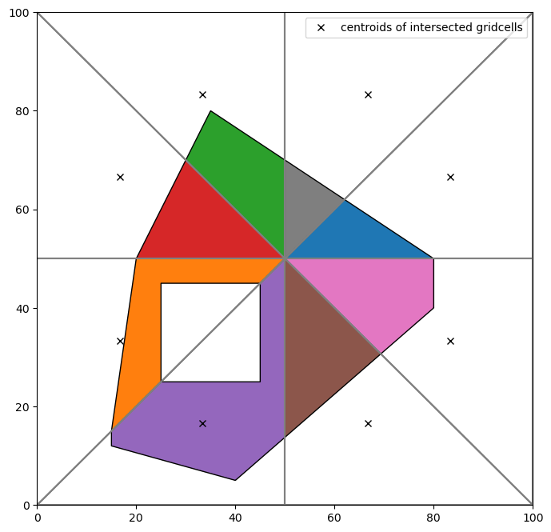
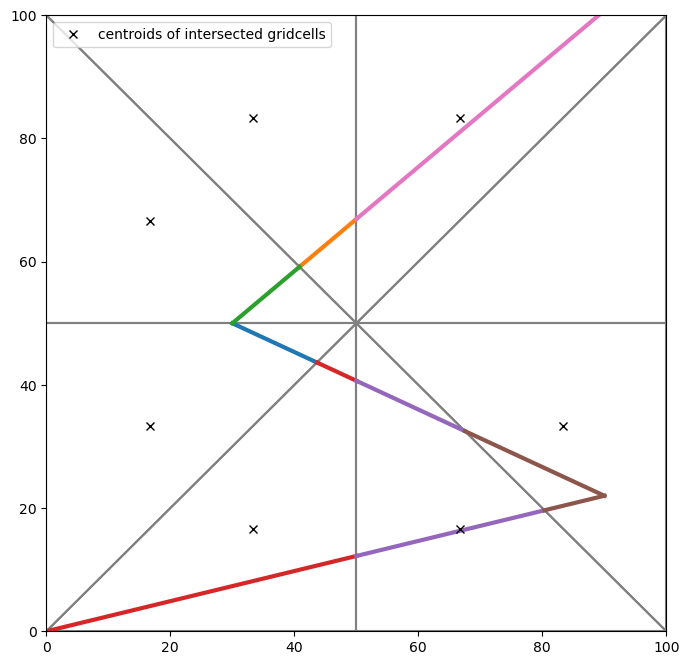

Note
Intersecting model grids with shapes
Note: This feature requires the shapely package (which is an optional FloPy dependency).
This notebook shows the grid intersection functionality in flopy. The intersection methods are available through the GridIntersect object. A flopy modelgrid is passed to instantiate the object. Then the modelgrid can be intersected with Points, LineStrings and Polygons and their Multi variants.
Table of Contents
Import packages
[1]:
import os
import sys
import matplotlib as mpl
import matplotlib.pyplot as plt
import numpy as np
import shapely
from shapely.geometry import (
LineString,
MultiLineString,
MultiPoint,
MultiPolygon,
Point,
Polygon,
)
import flopy
import flopy.discretization as fgrid
import flopy.plot as fplot
from flopy.utils import GridIntersect
print(sys.version)
print("numpy version: {}".format(np.__version__))
print("matplotlib version: {}".format(mpl.__version__))
print("flopy version: {}".format(flopy.__version__))
print("shapely version: {}".format(shapely.__version__))
3.10.10 | packaged by conda-forge | (main, Mar 24 2023, 20:08:06) [GCC 11.3.0]
numpy version: 1.24.3
matplotlib version: 3.7.1
flopy version: 3.3.7
shapely version: 2.0.1
GridIntersect Class
The GridIntersect class is constructed by passing a flopy modelgrid object to the constructor. There are options users can select to change how the intersection is calculated.
method: derived from model grid type or defined by the user: can be either"vertex"or"structured". If"structured"is passed, the intersections are performed using structured methods. These methods use information about the regular grid to limit the search space for intersection calculations. Note thatmethod="vertex"also works for structured grids.rtree: eitherTrue(default) orFalse, only read whenmethod="vertex". When True, an STR-tree is built, which allows for fast spatial queries. Building the STR-tree does take some time however. Setting the option to False avoids building the STR-tree but requires the intersection calculation to loop through all grid cells.
In general the “vertex” option is robust and fast and is therefore recommended in most situations. In some rare cases building the STR-tree might not be worth the time, in which case it can be avoided by passing rtree=False. If you are working with a structured grid, then the method="structured" can speed up intersection operations in some situations (e.g. for (multi)points) with the added advantage of not having to build an STR-tree.
The important methods in the GridIntersect object are:
intersects(): returns cellids for gridcells that intersect a shape (accepts shapely geometry objects, flopy geometry object, shapefile.Shape objects, and geojson objects)intersect(): for intersecting the modelgrid with point, linestrings, and polygon geometries (accepts shapely geometry objects, flopy geometry object, shapefile.Shape objects, and geojson objects)plot_point(): for plotting point intersection resultsplot_linestring(): for plotting linestring intersection resultsplot_polygon(): for plotting polygon intersection results
In the following sections examples of intersections are shown for structured and vertex grids for different types of shapes (Polygon, LineString and Point).
Rectangular regular grid
[2]:
delc = 10 * np.ones(10, dtype=float)
delr = 10 * np.ones(10, dtype=float)
[3]:
xoff = 0.0
yoff = 0.0
angrot = 0.0
sgr = fgrid.StructuredGrid(
delc, delr, top=None, botm=None, xoff=xoff, yoff=yoff, angrot=angrot
)
[4]:
sgr.plot();

Polygon with regular grid
Polygon to intersect with:
[5]:
p = Polygon(
shell=[
(15, 15),
(20, 50),
(35, 80.0),
(80, 50),
(80, 40),
(40, 5),
(15, 12),
],
holes=[[(25, 25), (25, 45), (45, 45), (45, 25)]],
)
Create the GridIntersect class for our modelgrid. The method kwarg is passed to force GridIntersect to use the "vertex" intersection methods.
[6]:
ix = GridIntersect(sgr, method="vertex")
Do the intersect operation for a polygon
[7]:
result = ix.intersect(p)
The results are returned as a numpy.recarray containing several fields based on the intersection performed. An explanation of the data in each of the possible fields is given below: - cellids: contains the cell ids of the intersected grid cells - vertices: contains the vertices of the intersected shape - areas: contains the area of the polygon in that grid cell (only for polygons) - lengths: contains the length of the linestring in that grid cell (only for linestrings) - ixshapes: contains the shapely object representing the intersected shape (useful for plotting the result)
Looking at the first few entries of the results of the polygon intersection (convert to pandas.DataFrame for prettier formatting)
[8]:
result[:5]
# pd.DataFrame(result) # recommended for prettier formatting and working with result
[8]:
rec.array([((2, 3), <POLYGON ((35 80, 40 76.667, 40 70, 30 70, 35 80))>, 66.66666667),
((2, 4), <POLYGON ((50 70, 40 70, 40 76.667, 50 70))>, 33.33333333),
((3, 2), <POLYGON ((30 70, 30 60, 25 60, 30 70))>, 25. ),
((3, 3), <POLYGON ((40 70, 40 60, 30 60, 30 70, 40 70))>, 100. ),
((3, 4), <POLYGON ((50 70, 50 60, 40 60, 40 70, 50 70))>, 100. )],
dtype=[('cellids', 'O'), ('ixshapes', 'O'), ('areas', '<f8')])
The cellids can be easily obtained
[9]:
result.cellids
[9]:
array([(2, 3), (2, 4), (3, 2), (3, 3), (3, 4), (3, 5), (3, 6), (4, 2),
(4, 3), (4, 4), (4, 5), (4, 6), (4, 7), (5, 1), (5, 2), (5, 3),
(5, 4), (5, 5), (5, 6), (5, 7), (6, 1), (6, 2), (6, 4), (6, 5),
(6, 6), (6, 7), (7, 1), (7, 2), (7, 3), (7, 4), (7, 5), (7, 6),
(8, 1), (8, 2), (8, 3), (8, 4), (8, 5), (9, 2), (9, 3), (9, 4)],
dtype=object)
Or the areas
[10]:
result.areas
[10]:
array([ 66.66666667, 33.33333333, 25. , 100. ,
100. , 66.66666667, 8.33333333, 75. ,
100. , 100. , 100. , 91.66666667,
33.33333333, 7.14285714, 75. , 50. ,
75. , 100. , 100. , 100. ,
21.42857143, 50. , 50. , 100. ,
99.10714286, 43.75 , 35.71428571, 75. ,
50. , 75. , 96.42857143, 32.14285714,
41.71428571, 99.35714286, 100. , 91.96428571,
22.32142857, 8.64285714, 36. , 14.28571429])
If a user is only interested in which cells the shape intersects (and not the areas or the actual shape of the intersected object) with there is also the intersects() method. This method works for all types of shapely geometries.
[11]:
ix.intersects(p)
[11]:
rec.array([((8, 1),), ((7, 2),), ((7, 1),), ((6, 1),), ((6, 2),),
((9, 4),), ((9, 2),), ((9, 3),), ((8, 2),), ((8, 3),),
((8, 4),), ((7, 3),), ((7, 4),), ((6, 4),), ((5, 1),),
((4, 1),), ((4, 2),), ((3, 2),), ((5, 2),), ((5, 3),),
((5, 4),), ((4, 3),), ((4, 4),), ((3, 4),), ((3, 3),),
((2, 4),), ((2, 3),), ((2, 2),), ((1, 3),), ((8, 5),),
((7, 5),), ((7, 6),), ((6, 5),), ((6, 6),), ((6, 7),),
((6, 8),), ((5, 5),), ((5, 7),), ((5, 6),), ((4, 6),),
((4, 5),), ((3, 6),), ((3, 5),), ((2, 5),), ((5, 8),),
((4, 8),), ((4, 7),)],
dtype=[('cellids', 'O')])
The results of an intersection can be visualized with the plotting methods in the GridIntersect object: - plot_polygon - plot_linestring - plot_point
[12]:
# create a figure and plot the grid
fig, ax = plt.subplots(1, 1, figsize=(8, 8))
sgr.plot(ax=ax)
# the intersection object contains some helpful plotting commands
ix.plot_polygon(result, ax=ax)
# add black x at cell centers
for irow, icol in result.cellids:
(h2,) = ax.plot(
sgr.xcellcenters[0, icol],
sgr.ycellcenters[irow, 0],
"kx",
label="centroids of intersected gridcells",
)
# add legend
ax.legend([h2], [i.get_label() for i in [h2]], loc="best");

The intersect() method contains several keyword arguments that specifically deal with polygons:
contains_centroid: only store intersection result if cell centroid is contained within polygonmin_area_fraction: minimal intersecting cell area (expressed as a fraction of the total cell area) to include cells in intersection result
Two examples showing the usage of these keyword arguments are shown below.
Example with contains_centroid set to True, only cells in which centroid is within the intersected polygon are stored. Note the difference with the previous result.
[13]:
# contains_centroid example
result2 = ix.intersect(p, contains_centroid=True)
# create a figure and plot the grid
fig, ax = plt.subplots(1, 1, figsize=(8, 8))
sgr.plot(ax=ax)
# the intersection object contains some helpful plotting commands
ix.plot_polygon(result2, ax=ax)
# add black x at cell centers
for irow, icol in result2.cellids:
(h2,) = ax.plot(
sgr.xcellcenters[0, icol],
sgr.ycellcenters[irow, 0],
"kx",
label="centroids of intersected gridcells",
)
# add legend
ax.legend([h2], [i.get_label() for i in [h2]], loc="best");

Example with min_area_threshold set to 0.35, the intersection result in a cell should cover 35% or more of the cell area.
[14]:
# min_area_threshold example
result3 = ix.intersect(p, min_area_fraction=0.35)
# create a figure and plot the grid
fig, ax = plt.subplots(1, 1, figsize=(8, 8))
sgr.plot(ax=ax)
# the intersection object contains some helpful plotting commands
ix.plot_polygon(result3, ax=ax)
# add black x at cell centers
for irow, icol in result3.cellids:
(h2,) = ax.plot(
sgr.xcellcenters[0, icol],
sgr.ycellcenters[irow, 0],
"kx",
label="centroids of intersected gridcells",
)
# add legend
ax.legend([h2], [i.get_label() for i in [h2]], loc="best");

Alternatively, the intersection can be calculated using special methods optimized for structured grids. Access these methods by instantiating the GridIntersect class with the method="structured" keyword argument.
[15]:
ixs = GridIntersect(sgr, method="structured")
result4 = ixs.intersect(p)
The result is the same as before:
[16]:
# create a figure and plot the grid
fig, ax = plt.subplots(1, 1, figsize=(8, 8))
sgr.plot(ax=ax)
# the intersection object contains some helpful plotting commands
ix.plot_polygon(result4, ax=ax)
# add black x at cell centers
for irow, icol in result4.cellids:
(h2,) = ax.plot(
sgr.xcellcenters[0, icol],
sgr.ycellcenters[irow, 0],
"kx",
label="centroids of intersected gridcells",
)
# add legend
ax.legend([h2], [i.get_label() for i in [h2]], loc="best");

Polyline with regular grid
MultiLineString to intersect with:
[17]:
ls1 = LineString([(95, 105), (30, 50)])
ls2 = LineString([(30, 50), (90, 22)])
ls3 = LineString([(90, 22), (0, 0)])
mls = MultiLineString(lines=[ls1, ls2, ls3])
[18]:
result = ix.intersect(mls)
Plot the result
[19]:
fig, ax = plt.subplots(1, 1, figsize=(8, 8))
sgr.plot(ax=ax)
ix.plot_linestring(result, ax=ax, cmap="viridis")
for irow, icol in result.cellids:
(h2,) = ax.plot(
sgr.xcellcenters[0, icol],
sgr.ycellcenters[irow, 0],
"kx",
label="centroids of intersected gridcells",
)
ax.legend([h2], [i.get_label() for i in [h2]], loc="best");

Same as before, the intersect for structured grids can also be performed with a different method optimized for structured grids
[20]:
ixs = GridIntersect(sgr, method="structured")
[21]:
result2 = ixs.intersect(mls)
# ordering is different so compare sets to check equality
check = len(set(result2.cellids) - set(result.cellids)) == 0
print(
"Intersection result with method='structured' and "
f"method='vertex' are equal: {check}"
)
Intersection result with method='structured' and method='vertex' are equal: True
MultiPoint with regular grid
MultiPoint to intersect with
[22]:
mp = MultiPoint(
points=[
Point(50.0, 0.0),
Point(45.0, 45.0),
Point(10.0, 10.0),
Point(150.0, 100.0),
]
)
For points and linestrings there is a keyword argument return_all_intersections which will return multiple intersection results for points or (parts of) linestrings on cell boundaries. As an example, the difference is shown with the MultiPoint intersection. Note the number of red “+” symbols indicating the centroids of intersected cells, in the bottom left case, there are 4 results because the point lies exactly on the intersection between 4 grid cells.
[23]:
result = ix.intersect(mp)
result_all = ix.intersect(mp, return_all_intersections=True)
[24]:
fig, ax = plt.subplots(1, 1, figsize=(8, 8))
sgr.plot(ax=ax)
ix.plot_point(result, ax=ax, s=50, color="C0")
ix.plot_point(result_all, ax=ax, s=50, marker=".", color="C3")
for irow, icol in result.cellids:
(h2,) = ax.plot(
sgr.xcellcenters[0, icol],
sgr.ycellcenters[irow, 0],
"kx",
ms=15,
label="centroids of intersected cells",
)
for irow, icol in result_all.cellids:
(h3,) = ax.plot(
sgr.xcellcenters[0, icol],
sgr.ycellcenters[irow, 0],
"C3+",
ms=15,
label="centroids with `return_all_intersections=True`",
)
ax.legend([h2, h3], [i.get_label() for i in [h2, h3]], loc="best");

Same as before, the intersect for structured grids can also be performed with a different method written specifically for structured grids.
[25]:
ixs = GridIntersect(sgr, method="structured")
[26]:
result2 = ixs.intersect(mp, return_all_intersections=False)
# ordering is different so compare sets to check equality
check = len(set(result2.cellids) - set(result.cellids)) == 0
print(
"Intersection result with method='structured' and "
f"method='vertex' are equal: {check}"
)
Intersection result with method='structured' and method='vertex' are equal: True
Vertex Grid
[27]:
cell2d = [
[0, 83.33333333333333, 66.66666666666667, 3, 4, 2, 7],
[1, 16.666666666666668, 33.333333333333336, 3, 4, 0, 5],
[2, 33.333333333333336, 83.33333333333333, 3, 1, 8, 4],
[3, 16.666666666666668, 66.66666666666667, 3, 5, 1, 4],
[4, 33.333333333333336, 16.666666666666668, 3, 6, 0, 4],
[5, 66.66666666666667, 16.666666666666668, 3, 4, 3, 6],
[6, 83.33333333333333, 33.333333333333336, 3, 7, 3, 4],
[7, 66.66666666666667, 83.33333333333333, 3, 8, 2, 4],
]
vertices = [
[0, 0.0, 0.0],
[1, 0.0, 100.0],
[2, 100.0, 100.0],
[3, 100.0, 0.0],
[4, 50.0, 50.0],
[5, 0.0, 50.0],
[6, 50.0, 0.0],
[7, 100.0, 50.0],
[8, 50.0, 100.0],
]
tgr = fgrid.VertexGrid(vertices, cell2d)
[28]:
fig, ax = plt.subplots(1, 1, figsize=(8, 8))
pmv = fplot.PlotMapView(modelgrid=tgr)
pmv.plot_grid(ax=ax);

Polygon with triangular grid
[29]:
ix2 = GridIntersect(tgr)
[30]:
result = ix2.intersect(p)
[31]:
fig, ax = plt.subplots(1, 1, figsize=(8, 8))
pmv = fplot.PlotMapView(ax=ax, modelgrid=tgr)
pmv.plot_grid()
ix.plot_polygon(result, ax=ax)
# only cells that intersect with shape
for cellid in result.cellids:
(h2,) = ax.plot(
tgr.xcellcenters[cellid],
tgr.ycellcenters[cellid],
"kx",
label="centroids of intersected gridcells",
)
ax.legend([h2], [i.get_label() for i in [h2]], loc="best");

LineString with triangular grid
[32]:
result = ix2.intersect(mls)
[33]:
fig, ax = plt.subplots(1, 1, figsize=(8, 8))
pmv = fplot.PlotMapView(ax=ax, modelgrid=tgr)
pmv.plot_grid()
ix2.plot_linestring(result, ax=ax, lw=3)
for cellid in result.cellids:
(h2,) = ax.plot(
tgr.xcellcenters[cellid],
tgr.ycellcenters[cellid],
"kx",
label="centroids of intersected gridcells",
)
ax.legend([h2], [i.get_label() for i in [h2]], loc="best");

MultiPoint with triangular grid
[34]:
result = ix2.intersect(mp)
result_all = ix2.intersect(mp, return_all_intersections=True)
[35]:
fig, ax = plt.subplots(1, 1, figsize=(8, 8))
pmv = fplot.PlotMapView(ax=ax, modelgrid=tgr)
pmv.plot_grid()
ix2.plot_point(result, ax=ax, color="k", zorder=5, s=80)
for cellid in result.cellids:
(h2,) = ax.plot(
tgr.xcellcenters[cellid],
tgr.ycellcenters[cellid],
"kx",
ms=15,
label="centroids of intersected cells",
)
for cellid in result_all.cellids:
(h3,) = ax.plot(
tgr.xcellcenters[cellid],
tgr.ycellcenters[cellid],
"r+",
ms=15,
label="centroids with return_all_intersections=True",
)
ax.legend([h2, h3], [i.get_label() for i in [h2, h3]], loc="best");